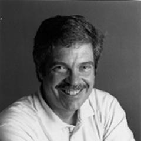

Joe Armstrong interviews Alan Kay
Joe Armstrong interviews Alan Kay
Code Mesh this year is a week away (Nov 11th) from Alan Kay's 50th anniversary of the "realization" about "objects", where objects do not share memory and communicate with each other through message passing. He calls it a realization rather than "invention" because "everything was kind of there" in the form of what Turing came to in the 30s, Sketchpad did in 1962, what Simula didn't quite do in 1965 (but still did something interesting), the "processes" in the form of what were called "virtual machines" for time-sharing and multiprocessing, and the recently started serious discussions in the ARPA community about how to do Licklider's "InterGalactic Network".
This session will start with a 15 minute introduction by Alan Kay, discussing where we are now, how we got here, and the progress (or lack there of) which we have made in the last 50 years. It will be followed by an interview session lead by Joe Armstrong, co-inventor of the language that got "objects" right.
About Alan
Dr. Alan Kay is one of the pioneers of object-oriented programming, personal computing, and graphical user interfaces. Dr. Kay's contributions have been acknowledged with the Charles Stark Draper Prize from the National Academy of Engineering, the A.M. Turing Award from the Association of Computing Machinery, and the Kyoto Prize from the Inamori Foundation.
Alan is an adjunct professor of computer science at UCLA, a visiting professor at Kyoto University, and an advisor to One Laptop per Child. He has held fellow positions at HP, Disney, Apple, and Xerox, and served as chief scientist at Atari. At Viewpoints Research, Alan continues his work with "powerful ideas education" for the world's children, and the development of advanced personal computers and networking systems. He is a fellow of the American Academy of Arts & Sciences, the National Academy of Engineering, the Royal Society of Arts, and the Computer History Museum. His other honors include the ACM Systems Software Award, the NEC Computers & Communication Foundation Prize, and honorary doctorates from Georgia Institute of Technology, the University of Pisa, and the University of Waterloo.